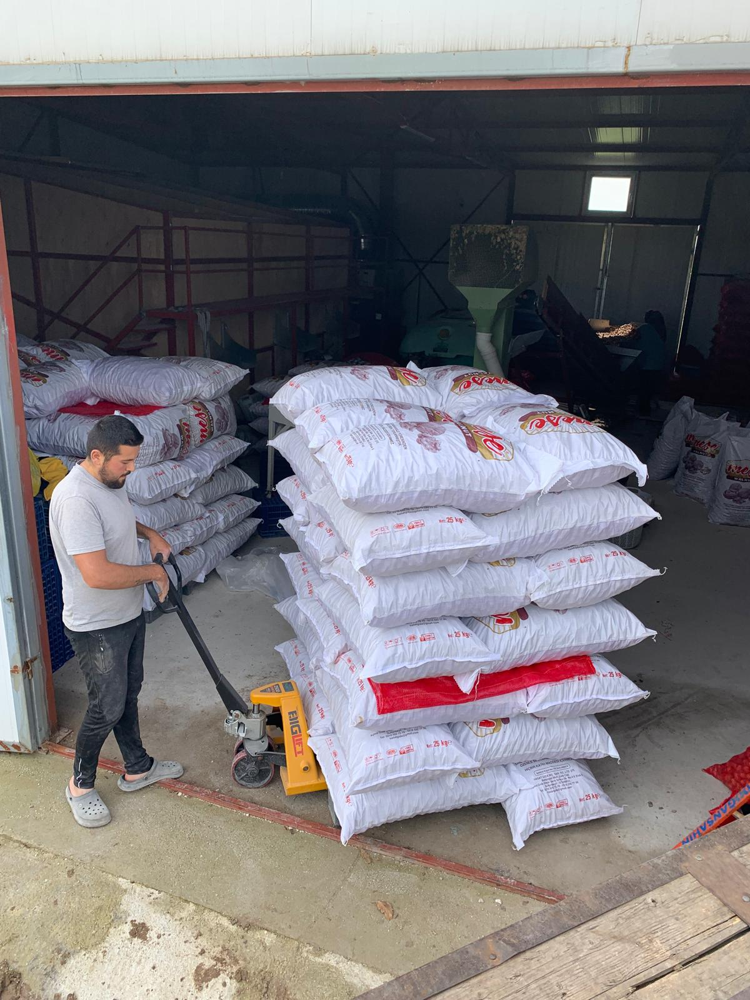

Çanakkale'de Chandler cevizi yetiştiriyoruz
925 ağaç, 50.699 m². Kendi bahçemizde yetişir, kendi tesisimizde kurutulur, aracısız size ulaşır.

Taze ve doğal ceviz
Chandler çeşidi iri taneli cevizlerimiz; hasat sonrası soyulur, 3 siloluk tesisimizde kurutulur, boş–dolu ayrımı yapılır ve özenle boylanır. Katkı yok, aracı yok.
- ✓ Chandler çeşidi, iri ve dolgun taneli
- ✓ Kendi tesisimizde kurutulur ve boylanır
- ✓ Hasattan çuvala kadar izlenebilir

2012'den beri aynı toprakta
Bahçemiz Aralık 2012'de, Denizli'den getirilen 925 mavi sertifikalı Chandler fidanı ile kuruldu. Çanakkale–İzmir duble yoluna 750 metre mesafede, iki tarafı yola açık bir parselde.
Cevizlerimiz Akçapınar barajından gelen suyla, 3 kademe filtreli damlama sistemiyle sulanır; toprak nemi sensörlerle günlük ölçülür. Bahçenin tamamı güneş enerjisiyle çalışır.
- Konum
- Akçapınar, Çanakkale
- Ada / Parsel
- 159 / 38
- Dikim aralığı
- 8 m × 6 m
- Sulama
- Damlama, sensör takipli
Kabuğun içinde ne var?
Chandler çeşidi; ince kabuklu ve dolgun içli yapısıyla cevizler arasında aranan bir çeşittir. Taneleri iri, iç oranı yüksektir.
Sitemizdeki cevizleri kendi tesisimizde soyuyor, 3 siloda kurutuyor, boş–dolu makinesinden geçirip boyluyoruz. Yani kabuğun içindeki her tane, aynı bahçeden çıkma.
- Çeşit
- Chandler
- İç oranı
- Yüksek, iri taneli
- İşleme
- Kendi tesisimizde
Sürükleyip döndürün
3D tarama: cglib.team · CC BY 4.0
Hasattan çuvala, dört adım
Hasat
Eylül–Ekim'de olgunlaşan cevizler dalından tek tek toplanır.
Ayıklama
Yeşil kabuk soyulur, boş–dolu ayırma makinesinden geçirilir.
Kurutma
3 siloda, 200.000 kcal sıcak hava ile ideal neme kadar kurutulur.
Tasnif
Boylanır, tartılır ve çuvallanır. Doğrudan üreticiden size gelir.

Bu bahçeyi 2012'de kurdum. Her ağacı kendim diktim, her hasadı kendim takip ederim. Sattığım ceviz, kendi soframa koyacağım cevizdir.
Mahmut Torlak — Bahçe SahibiMevsimlerden kareler



2026 hasadını sipariş edin
Telefon veya WhatsApp ile doğrudan bahçeden. Hasat dönemi: Eylül–Ekim.